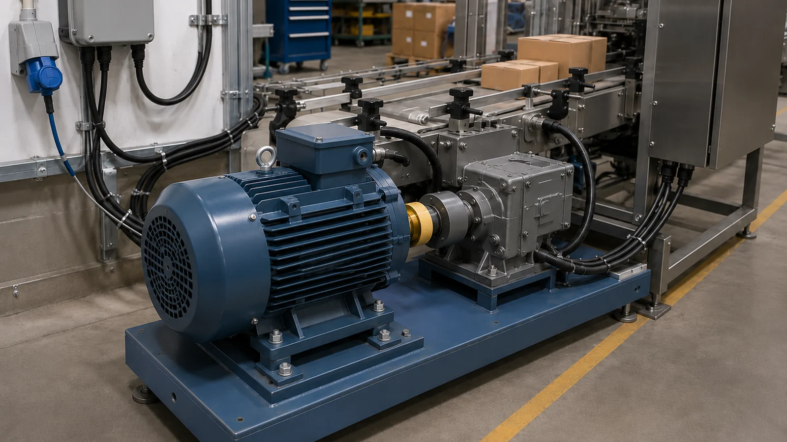
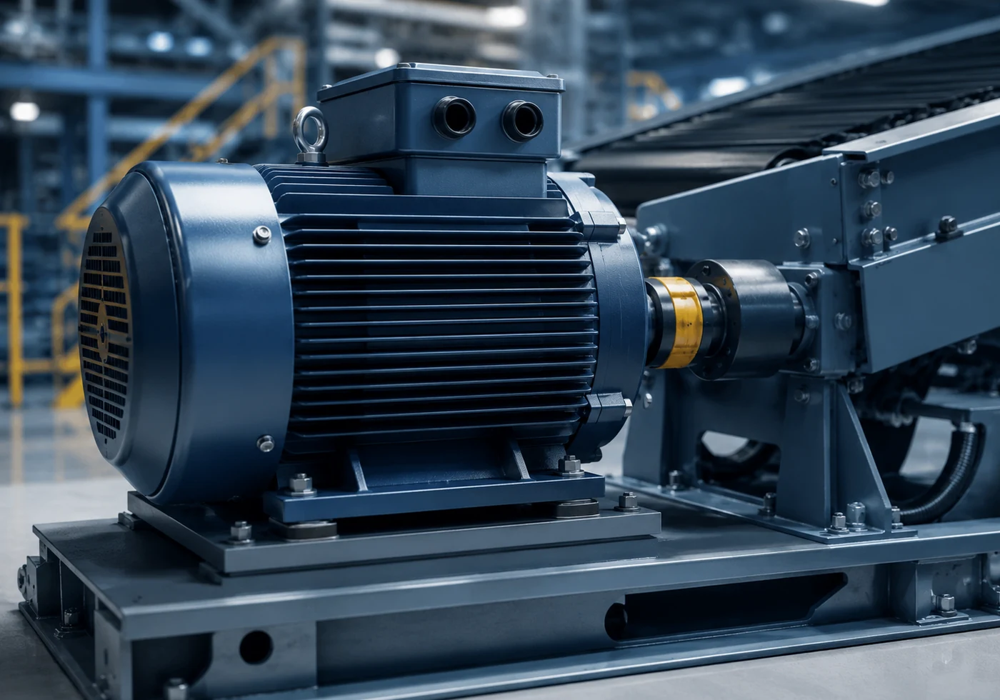

Clarity in industrial noise
Industrial vibration diagnostics for rotating machinery
On-site vibration analysis for motors, pumps, gearboxes and other rotating machinery across the West Midlands. Start with a paid diagnostic snapshot when something changes; add continuous monitoring when trend or intermittency matters.
Diagnostic snapshots from £125 · no subscription required
One-off machine checks, bearing-focused diagnostics and continuous condition monitoring — scoped around the maintenance question.
Demonstration running
A practical first step
When a machine changes, start by measuring it
A new vibration, a suspected bearing problem, a motor running differently or a recurring mechanical concern often needs a focused answer first. EchoShift provides paid on-site diagnostic snapshots so maintenance and engineering teams can measure the machine, understand the evidence and decide what to do next.
New or increased vibrationSuspected bearing conditionImbalance or looseness concernRecurring mechanical issuePre-maintenance health check
See Snapshot Diagnostics

Services
Start with the level of support you actually need
A one-off diagnostic is often the quickest place to start. Continuous monitoring is available when the machine, risk and operating context justify longer-term observation.
Snapshot Diagnostics
From £125 for a single-machine diagnostic snapshot
A focused on-site vibration check for a machine that has changed, with engineering interpretation and a clear recommended next action.
- Temporary sensor mounting
- Operating-condition measurements
- Vibration evidence review
- Clear engineering findings and next steps
Vibration Diagnostics
Investigate abnormal vibration and mechanical behaviour across industrial rotating machinery.
Vibration diagnosticsBearing Diagnostics
Bearing-focused vibration analysis and envelope methods for rolling-element bearing concerns.
Bearing diagnosticsContinuous Condition Monitoring
From £75 per monitored asset per month · installation from £750
Installed condition monitoring for critical rotating assets where trend, intermittency or changing operating states matter.
Continuous monitoringRotating machinery
Vibration diagnostics for the rotating machinery you maintain
EchoShift provides on-site vibration diagnostics across motors, pumps, gearboxes, mixers, fans, blowers, conveyors, compressors and other industrial rotating machinery.
01Electric MotorsMotor vibration, bearing condition, alignment and mechanical behaviour.
02PumpsMotor-pump trains, bearings, coupling and abnormal vibration.
03Gearboxes & Geared DrivesBearings, gear-related vibration and drive-train condition.
04Mixers & AgitatorsMotors, reducers, couplings, shaft supports and rotating condition.
05Fans & BlowersImbalance, bearings, looseness, drive and supporting structure.
06ConveyorsDrive motors, gearboxes, pulleys, rollers and accessible bearings.
Also supporting bespoke bearing-supported rotating equipment after a quick machine and access review.
View all applicationsHow a diagnostic works
From machine concern to useful evidence
A snapshot is deliberately straightforward. The aim is to capture useful measurements, interpret them in context and give the maintenance team something actionable.
- 01
Tell us what changed
Describe the machine, operating concern, site location and what prompted the diagnostic.
- 02
Measure on site
Agree safe measurement positions, capture vibration under useful operating conditions and record relevant machine context.
- 03
Analyse the evidence
Review the vibration response for credible indicators, cross-check patterns across measurements and identify the mechanisms the evidence supports.
- 04
Get clear next steps
Receive the findings, confidence level and recommended maintenance, follow-up measurement or monitoring action.
Reliable vibration analysis
Separate machine condition from surrounding noise
Industrial vibration is shaped by sensor mounting, load, structure, neighbouring equipment and operating state. EchoShift records that context and cross-checks relevant measurements so maintenance decisions are based on repeatable machine evidence rather than isolated spectral peaks.
Measurement quality
Sensor position, coupling and operating condition matter. The measurement path is part of the diagnostic.
Machine context
Speed, load, drive arrangement and surrounding machinery are considered before interpreting vibration features.
Multiple lines of evidence
Where possible, conclusions are supported by agreement between relevant measurements rather than one isolated feature.
Clear engineering judgement
Findings are reported at the confidence the evidence supports, with the next useful measurement or inspection identified where further confirmation would add value.
Local industrial support
On-site vibration diagnostics across Coventry, Birmingham, Wolverhampton and the wider West Midlands
EchoShift provides practical on-site diagnostics across Coventry, Birmingham, Wolverhampton, Tipton, the Black Country, Solihull and surrounding manufacturing areas, with wider West Midlands coverage available by arrangement.

When a snapshot is not enough
Move into continuous monitoring where the asset justifies it
For machinery that needs to be watched over weeks and months, EchoShift uses an installed monitoring approach that combines machine vibration evidence with operating and environmental context.
For critical assets, a monitored deployment can establish longer-term trends, capture intermittent behaviour and show how condition changes across real operating states.
Discuss Condition MonitoringAbout EchoShift
Engineering-led vibration analysis for real maintenance decisions
EchoShift provides engineering-led vibration diagnostics and condition monitoring for rotating machinery. The approach combines practical site measurement, vibration analysis, embedded sensing and evidence-led diagnostic engineering.
About EchoShiftNeed a machine checked?
Book an on-site diagnostic
Tell EchoShift what machine you are concerned about, where the site is and what has changed. We will confirm whether a diagnostic snapshot is a sensible next step.